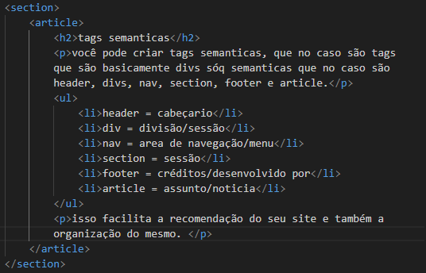

tags semanticas
você pode criar tags semanticas, que no caso são tags que são basicamente divs sóq semanticas que no caso são header, divs, nav, section, footer e article.
- header = cabeçario
- div = divisão/sessão
- nav = area de navegação/menu
- section = sessão
- footer = créditos/desenvolvido por
- article = assunto/noticia
isso facilita a recomendação do seu site e também a organização do mesmo. exemplo:

isso é o seu código de forma semantica